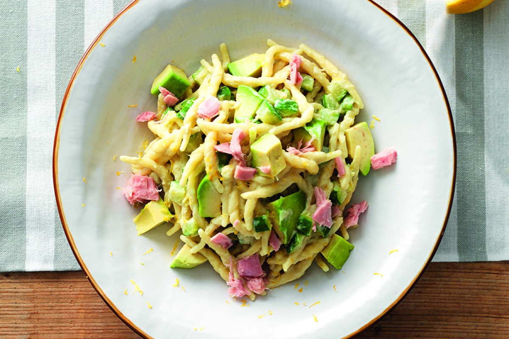

Avocado Pasta

Description
You won't really know what to expect or how delicious it is until you try it.
It's like nothing else I've ever had before but tastes just a tad like pesto.
The smooth creamy avocado along with the tangy garlic and fresh herbs make an amazing combo!
Plus, it's healthy and good for you too!
Ingredients
- 18 OZ. of fresh trofie pasta
- 4 OZ. of tuna in brine, drained
- 1 of ripe avocado
- bay leaves
- 4 OZ. of robiola cheese
- 2 of zucchini
- lemon
- salt
Steps
- Clean the zucchini and cut into cubes.
- Bring a pot of water to a boil.
- Add salt, 2 bay leaves and the zest of 1/4 lemon.
- When the water returns to a boil, add the zucchini and let cook for 1 minute.
- Add the pasta and cook for a further 6-7 minutes
- For the sauce: Peel the avocado. Blend half of the avocado with the tuna,
robiola cheese, juice of half a lemon, grated zest of 1/4 lemon, and a pinch of salt
- Dice the remaining avocado. Drain the pasta and the zucchini and toss with the tuna sauce and the avocado cubes.